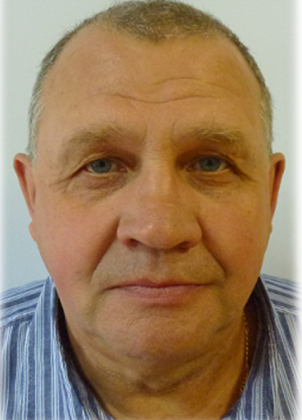
Шумилов Сергей Николаевич
Сергей Николаевич был принят на работу в депо в 1972 году. На период 1974-1977 гг Сергея
Николаевича призвали на военную службу, после чего он вернулся на предприятие слесарем в цех
подъемки. В 1981 году Сергей Николаевич перешел в периодический цех, в 1982 году получил
повышение до бригадира. В 1985 году Сергей Николаевич был назначен мастером.
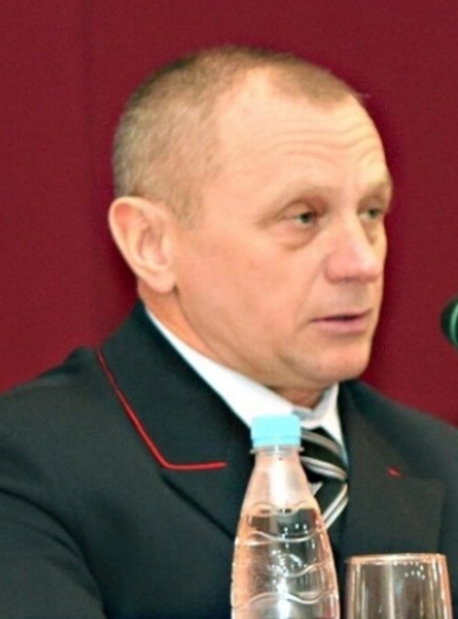
Бондарев Александр Георгиевич
Александр Георгиевич посвятил железной дороге всю свою жизнь – без малого 40 лет. Он
поступил на работу в локомотивное депо в 1973 году. После перерыва на военную службу в рядах
Советской Армии, с 1975 года, работал бригадиром электромашинного цеха, мастером,
заместителем начальника депо по ремонту электровозов. С 2009 года до выхода на пенсию
Александр Георгиевич руководил нашим депо.
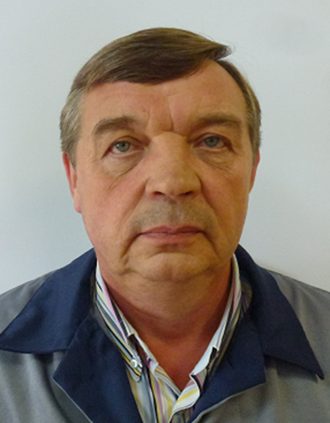
пирогов Вячеслав Владимирович
Сергей Николаевич был принят на работу в депо в 1972 году. На период 1974-1977 гг Сергея
Николаевича призвали на военную службу, после чего он вернулся на предприятие слесарем в цех
подъемки. В 1981 году Сергей Николаевич перешел в периодический цех, в 1982 году получил
повышение до бригадира. В 1985 году Сергей Николаевич был назначен мастером.

Самсонов Михаил Юрьевич
Михаил Юрьевич был принят на работу в депо в 1982 году слесарем-ремонтником. Через год был
переведен слесарем-сантехником. В 2008 году назначен слесарем-ремонтником 6 разряда и
работал на этой должности до выхода на пенсию в 2023 году.
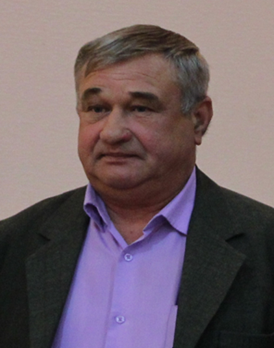
Соколов Михаил Малафеевич
Михаил Малафеевич был принят в депо в 1975 году слесарем по ремонту подвижного состава
аппаратного цеха. Через год был уволен в связи с призывом на военную службу. В 1978 году
вернулся на работу в тот же цех.
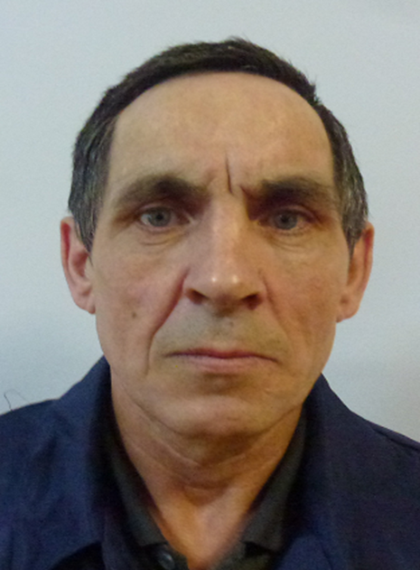
Усольцев Михаил Леонидович
29 ноября 1978 года Михаил Леонидович пришел работать в депо слесарем по ремонту подвижного
состава в цех подъемки. В 1992 году его перевели на строительство дома хозспособом. Через
два года Михаил Леонидович вернулся на подъемку. В 2010 году переведен в производственный
участок по среднему ремонту электровозов ВЛ-10, в 2013 году – в участок текущего ремонта
электровозов (ТР-3). 23 августа 2018 года вышел на заслуженную пенсию
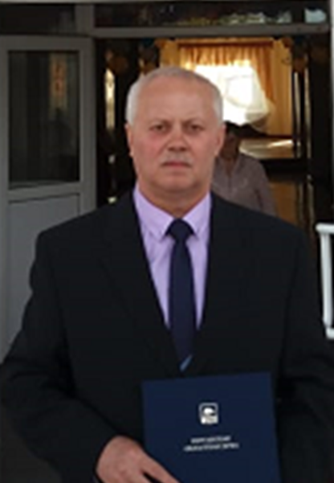
Широков Иван Александрович
Михаил Малафеевич был принят в депо в 1975 году слесарем по ремонту подвижного состава
После службы в Советской армии в июле 1980 года Иван Александрович был принят в Локомотивное
депо Курган подсобным рабочим. Вскоре он был переведен помощником машиниста, затем работал
машинистом электровоза.
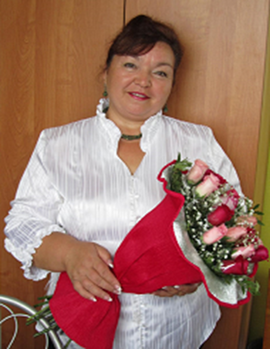
Язовинских Нина Георгиевна
27 апреля 1992 года Нина Георгиевна была принята на работу в цех подъемки мойщиком-уборщиком
подвижного состава. В августе этого же года переведена маляром.
В 2003 году Нина Георгиевна стала оператором ЭВМ. В 2009 году назначена исполнителем
художественно-оформительских работ производственного участка по ремонту и текущему
содержанию зданий и сооружений.
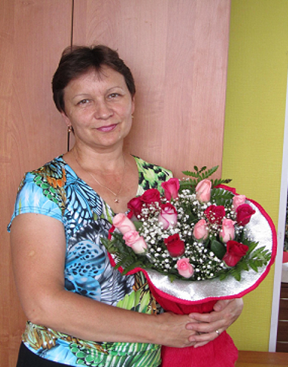
Астафьева Людмила Васильевна
Людмила Васильевна была принята в локомотивное депо в сентябре 1996 г. мойщиком-уборщиком
подвижного состава.
С 1997 по 2008 годы трудилась в бухгалтерии, в 2014 году была переведена на должность
специалиста и работала в этой должности до выхода на пенсию в 2019 году.
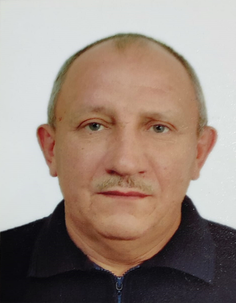
Вязьмин Михаил Георгиевич
Михаил Георгиевич был принят в локомотивное депо в сентябре 1973 года подсобным рабочим
инструментального цеха, где работал до призыва в армию.
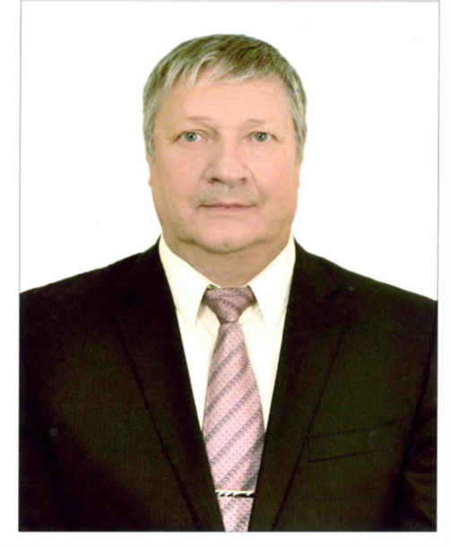
Ефимов Анатолий Аркадьевич
Анатолий Аркадьевич был принят в депо слесарем по ремонту подвижного состава периодического
цеха 9 июня 1980 года. В июне 1996 года был назначен бригадиром электроцеха.
В 2008 году Анатолий Аркадьевич переведен слесарем-электриком по ремонту электрооборудования
производственного участка по обслуживанию и ремонту электрических сетей.
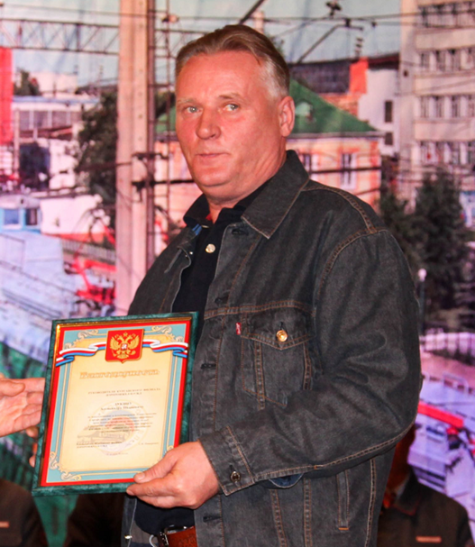
Лукин Александр Иванович
Александр Иванович начал работать в локомотивном депо в 1977 году. До 1984 года трудился
слесарем по ремонту подвижного состава, затем прессовщиком изделий из пластмасс.
Все 43 года трудовой деятельности Александр Иванович посвятил железной дороге. На пенсию
вышел в 2022 году.
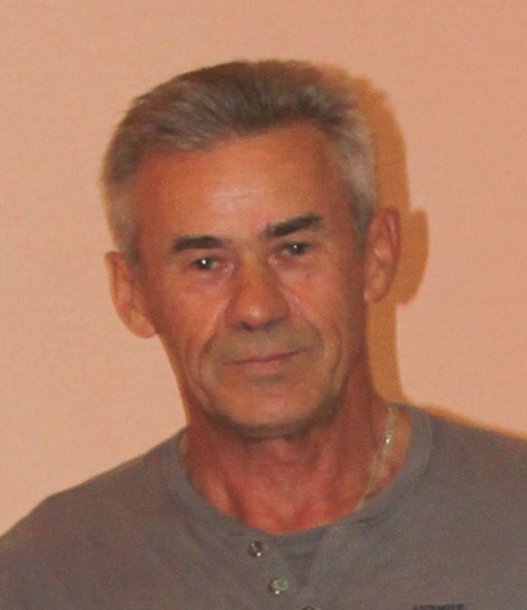
Новохатко Леонид Васильевич
Леонид Васильевич принят в депо слесарем-трубопроводчиком в 1976 году. В этом же году, после
обучения, был назначен помощником машиниста электровоза.
В 1982 году был переведен слесарем по ремонту подвижного состава аппаратного цеха. С 1991
года по 1994 годы занимался строительными работами, после чего вернулся в аппаратный цех,
где работал до выхода на пенсию.
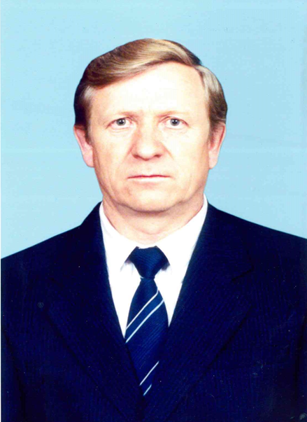
Борисов Генадий Александрович
В 1973 году Геннадий Александрович принят на работу в депо бригадиром периодического цеха.
Спустя 5 лет безупречной работы назначен мастером, затем старшим мастером. С 2001 по 2008
год Геннадий Александрович трудился мастером ПТО, после чего вернулся в периодический цех. С
2009 года и до выхода на пенсию (2010 год) работал мастером участка по техническому
обслуживанию электровозов и тепловозов.
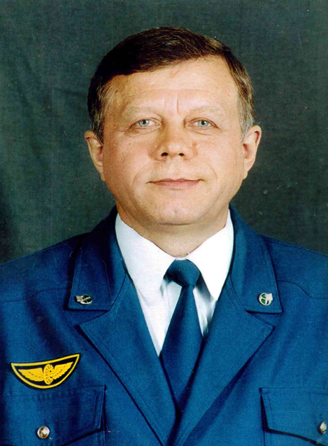
Рыжих Михаил Андреевич
В 1971 году, после службы в Советской Армии, Михаил Андреевич поступил на работу в депо
слесарем по ремонту подвижного состава периодического цеха.
В период с 1972 по 1973 год и в 1992 году работал помощником машиниста электровоза. На
пенсию Михаил Андреевич вышел в 2010 году, имея высокий шестой квалификационный разряд.
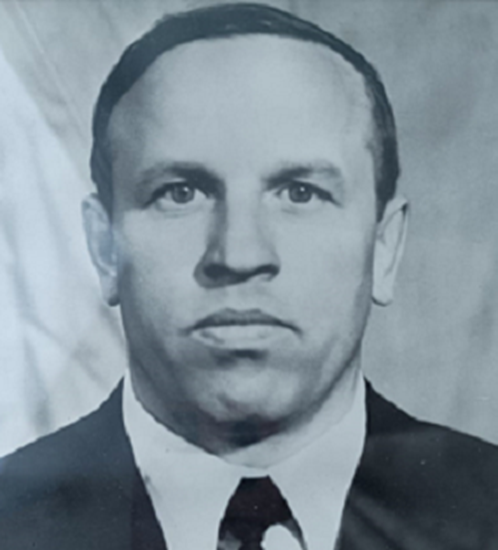
Абрамов Герман Нестерович
В 1959 году, после окончания железнодорожного училища, принят в локомотивное депо на
должность помощника машиниста электровоза. В 1969 окончил Уральский электромеханический
институт инженеров железнодорожного транспорта.
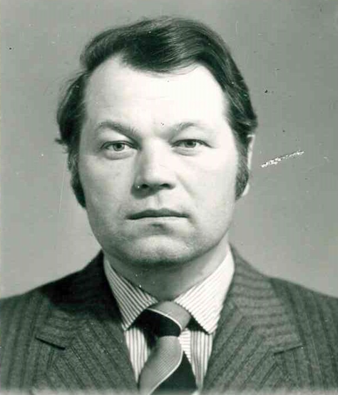
Аристов Владимир Александрович
Владимир Александрович начал свою трудовую деятельность в 1957 году в паровозном депо
Карталы. В локомотивное депо ст. Курган принят в 1964 году слесарем аппаратного цеха. В 1975
назначен бригадиром, а через год – мастером цеха. На пенсию Владимир Александрович вышел в
1999 году, а в 2022 вернулся в депо в качестве Председателя Совета ветеранов.
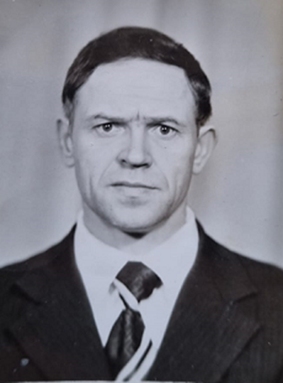
Распопов Александр Владимирович
Александр Владимирович поступил на работу в депо в 1960 году слесарем цеха подъемки. С 1972
года работал мастером и старшим мастером периодического, колесного, заготовительного цехов.
На пенсию вышел в 2002 году.
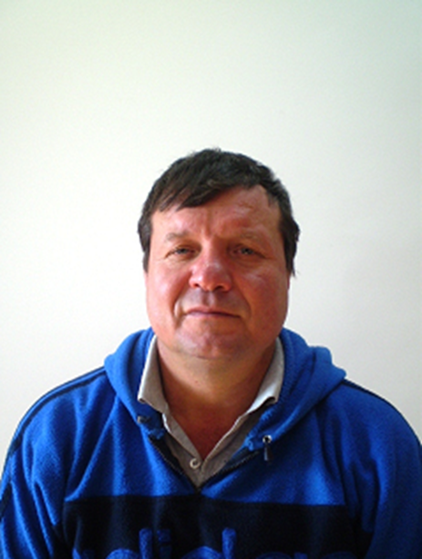
Абрашков Игорь Владимирович
Игорь Владимирович поступил на работу в депо в 1983 году слесарем по ремонту подвижного
состава автоматного цеха. С 1992 года и до выхода на пенсию работал бригадиром того же
производственного участка.
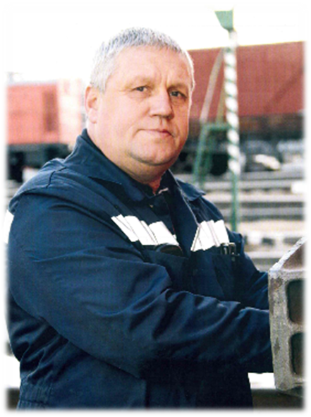
Широков Анатолий Александрович
Анатолий Александрович поступил на работу в депо в 1982 году слесарем по ремонту подвижного
состава. С 2009 года и до выхода на пенсию работал слесарем по осмотру и ремонту локомотивов
на пунктах технического обслуживания.
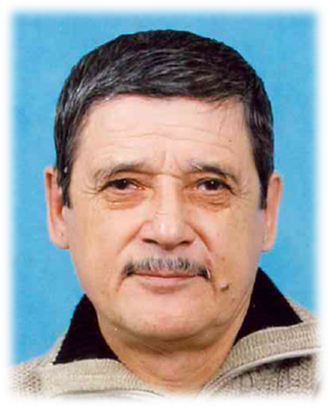
Половников Григорий Николаевич
Григорий Николаевич поступил на работу в депо в 1973 году фрезеровщиком механического цеха.
В 1976 году обучился профессии токаря и работал по этой специальности до выхода на пенсию
(2011 год).

Борисенко Трофим Трофимович
Трофим Трофимович принят в депо в 1959 году разнорабочим. Через год обучился профессии
слесаря и работал в должности до призыва на службу в Советской Армии.
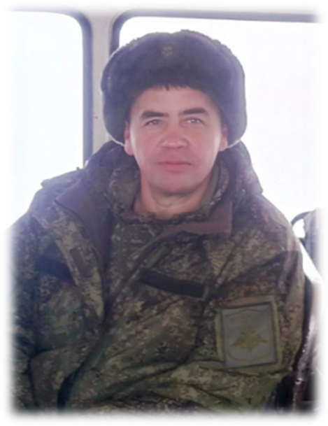
Блинов Сергей Владимирович
Сергей Владимирович работал в депо с 2012 года. Начинал слесарем-ремонтником участка по
облуживанию и ремонту электрических сетей и оборудования, затем переведен электромонтером
участка по ремонту электрического оборудования.